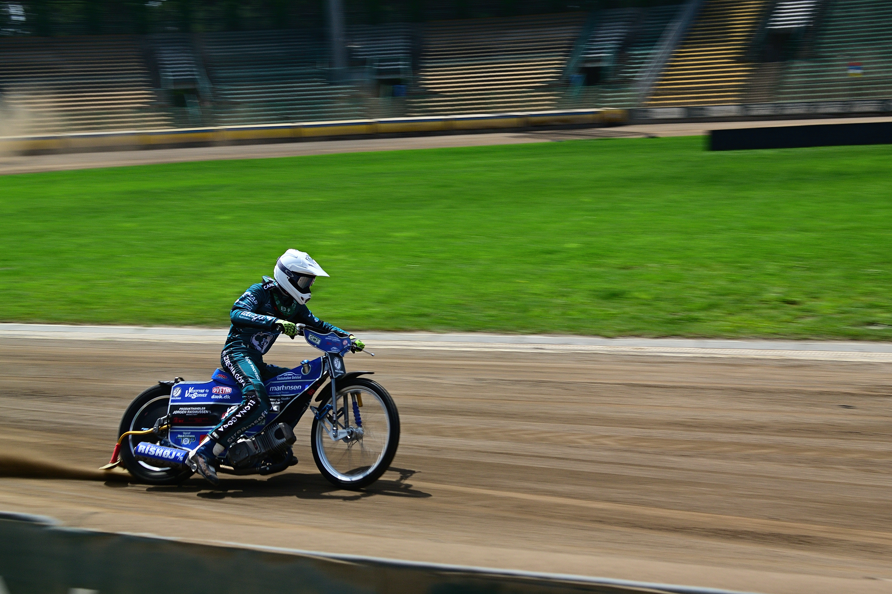

Witaj na mojej stronie!
Znajdziesz tutaj moje najlepsze ujęcia ze stadionu żużlowego oraz informacje o realizowanych projektach.
Wybierz zakładkę z menu powyżej, aby dowiedzieć się więcej.
Strona pasjonata fotografii amatorskiej.

Znajdziesz tutaj moje najlepsze ujęcia ze stadionu żużlowego oraz informacje o realizowanych projektach.
Wybierz zakładkę z menu powyżej, aby dowiedzieć się więcej.